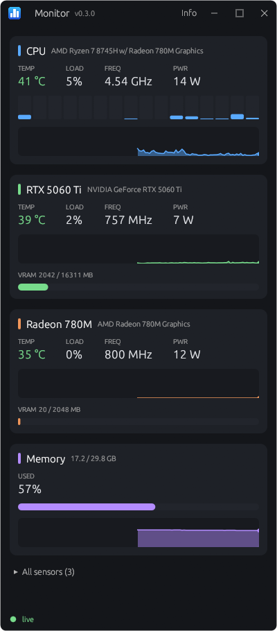

Your PC's readings, right in the taskbar.
A small Windows system monitor in pure Rust. See CPU, GPU and memory at a glance, and run benchmarks and stress tests when you need them.
Free and open source (MIT). Needs 64-bit Windows.

What it shows
CPU
Temperature, frequency, power and load, including per-core load and clocks.
GPU
Temperature, clock, load, power and video memory, for every NVIDIA and AMD GPU.
Memory
Usage and history.
Taskbar widget
Choose what it shows, whether it sits on the taskbar or floats, and on which monitor. A tray icon keeps it out of the way.
Benchmarks and stress tests
Bandwidth, latency and throughput for CPU, memory and GPU, plus CPU and GPU stress tests with a temperature limit.
Device info
Specs for your CPU and GPUs, in one place.
Download
Installer (.msi)
Best for most people. Asks for admin rights once, and lets you choose CPU sensors, starting with Windows and update checks.
Portable (.zip)
Unzip and run, with nothing to install. Asks for admin rights once only if you turn on CPU sensors. It doesn't check for updates.
Releases aren't code-signed yet, so Windows may warn that the publisher is unknown.
Why CPU sensors need admin rights
Windows only lets kernel drivers read CPU temperature, frequency and power. Everything else works without admin rights, and the CPU sensors are optional.
Monitor uses the signed PawnIO driver, whose modules allow only the CPU registers they list. A small Windows service reads the sensors and passes the values to the app, so the app itself never runs as admin or touches the driver.
Both can be removed from Installed apps in Windows Settings. PawnIO stays if you uninstall Monitor, because other apps can share it.
Privacy
Monitor doesn't send your readings or anything about your PC anywhere. The one thing it does online is ask GitHub once a day whether there's a newer version, and GitHub sees your IP address, as with any web request. You can turn this off during install or in the tray menu. Portable copies never check.
This page has no analytics or tracking of its own. It's hosted on GitHub Pages.
Hardware support
Developed on an AMD Ryzen with Radeon and NVIDIA GPUs. CPU sensors support AMD Zen and newer, and Intel CPUs, though the Intel code hasn't been tested on real hardware yet. Intel GPUs aren't supported. Reports are welcome.